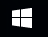

Час 3. Подешавање радног окружења¶
- На овом часу ћемо говорити о:
изгледу радне површине;
подешавању позадинске слике и миша;
регионалним и језичким подешавањима.
Некада су људи куцали наредбе које је рачунар извршавао. Морали су да познају велики број наредби, понекад сложених и нелогичних.
Због тога су развијени графички оперативни системи који омогућавају да се са рачунаром комуницира путем слика.
Први програм који се учитава када се укључи дигитални уређај је оперативни систем. На екрану ће се појавити радна површина (енгл. Desktop) на којој се могу наћи различити објекти (документи, фасцикле и програми), представљени малим сликама које се називају иконе. Радну површину можемо да прилагодимо потребама сваког корисника. На доњој слици приказана је радна површина са најважнијим графичким елементима: прозор, икона, пречица, линија послова и информација о систему

На доњој слици биће приказан прозор - основни визуелни елемент Windows-a и његови основни елементи.

У овој лекцији, научићемо да променимо позадинску слику, прилагодимо карактеристике миша својим потребама и уредимо језичка и регионална подешавања.
У контролној табли оперативног система коју користимо, налазе се програми за системска подешавања. Постоји неколико начина како се приступа системским подешавањима.
Први начин приступа системским подешавањима је клик на Старт дугме  (1). Отвара се старт мени у оквиру кога одабирамо опцију (2). Након одабира опције Settings отвара се прозор у се налазе различите опције за системска подешавања (3).
{kind=link}
{kind=link}
Поступак дат је на доњој слици.

Други начин приступа системским подешавањима је клик на иконицу  у линији послова (1) и у пољу
у линији послова (1) и у пољу  уношење речи Control (2) у листи претраге појављује се Control Panel (3). Левим кликом на
уношење речи Control (2) у листи претраге појављује се Control Panel (3). Левим кликом на  покрећемо прозор Control Panel (4) у коме се налазе различите опције за системска подешавања.
покрећемо прозор Control Panel (4) у коме се налазе различите опције за системска подешавања.
Поступак дат је на доњој слици.

Подешавање позадинске слике¶
Радно окружење треба да буде по твом укусу. Слика пријатног изгледа позитивно утиче на твоје расположење и мотивацију за рад. Позадинску слику подешавамо у оквиру контролне табле оперативног система у опцији.
У прозору Settings одаберемо опцију  . Отвара се прозор као на доњој слици у коме подешавамо опције за постављање позадинску слику.
. Отвара се прозор као на доњој слици у коме подешавамо опције за постављање позадинску слику.
Одаберемо опцију  (1), из падајуће листе Background (2) одаберемо опцију Picture. У делу Choose your picture можемо да одаберемо понуђене слике или да одаберемо жељену слику са свог рачунара, кликом на дугме Browse (3). Из листе Choose a fit (4) из падајуће листе одаберемо да слика попуњава цео екран Fill.
(1), из падајуће листе Background (2) одаберемо опцију Picture. У делу Choose your picture можемо да одаберемо понуђене слике или да одаберемо жељену слику са свог рачунара, кликом на дугме Browse (3). Из листе Choose a fit (4) из падајуће листе одаберемо да слика попуњава цео екран Fill.

Опис поступка за промену позадинске слике можете погледати на доњем видеу:
Видео
Подешавање миша¶
Оперативни систем претпоставља да дигиталне уређаје користе особе које пишу десном руком. Због тога је особама које су леворуке веома тешко да користе миша подешеног за дешњаке. Ако пишеш левом руком, у оквиру контролне табле оперативног система можемо да заменимо функције левог и десног дугмета миша.
Одаберемо опцију  (1), из падајуће листе
(1), из падајуће листе  (2) одаберемо опцију Select your primary button (3) одаберемо опцију Right чиме смо миш прилагодили потребама леворуким особама.
(2) одаберемо опцију Select your primary button (3) одаберемо опцију Right чиме смо миш прилагодили потребама леворуким особама.

Други начин подешавања је одабир опције  чиме се отвара прозор као на доњој слици.
чиме се отвара прозор као на доњој слици.

Означавањем опције Switch primary and secondary buttons миш је прилагођен потребама леворуких особа.
Да бисмо подесили брзину двоклика миша, користимо клизач како бисмо је подесили. Двокликом на фасциклу тестирамо подешавања миша.

Опис поступка за постављање примерног (главног) тастера миша и подешавање брзине клика можете погледати на доњем видеу:
Видео
Регионална и језичка подешавања¶
Оперативни систем омогућава да тастатуру подесимо на писмо и језик који желимо. Тако, на пример, ако су на тастатури приказана слова енглеског алфабета, а језик подешен на српски, латинично писмо, притиском на тастер  на екрану ће се приказати č.
Језик и писмо подешавамо у оквиру контролне табле оперативног система.
на екрану ће се приказати č.
Језик и писмо подешавамо у оквиру контролне табле оперативног система.
У прозору Settings одаберемо опцију  . Отвара се прозор као на доњој слици у коме подешавамо опције за регионална и језичка подешавања.
. Отвара се прозор као на доњој слици у коме подешавамо опције за регионална и језичка подешавања.
Одаберемо опцију  и у делу Languages са десне стране прозора, кликнемо на дугме Add a language, отвара се прозор у коме одаберемо језик и писмо које желимо да мењамо.
и у делу Languages са десне стране прозора, кликнемо на дугме Add a language, отвара се прозор у коме одаберемо језик и писмо које желимо да мењамо.

Језик и писмо бирамо у делу обавештења и индикатора (енг. System tray), приказано на доњој слици:
Опис поступка за промену језика тастатуре можете погледати на доњем видеу:
Видео
- Шта смо научили?
да је радна површина место на коме постављаш програме и податке које често користиш;
Најважнији графички елементи су: прозор, икона, пречица, линија послова и информација о систему
Пречица има улогу да покаже путању до неког другог фајла или фолдера на диску или неког објекта у систему;
Икона визуелно представљање фајлова и фолдера.